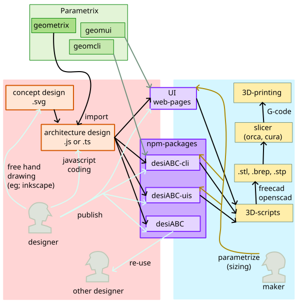
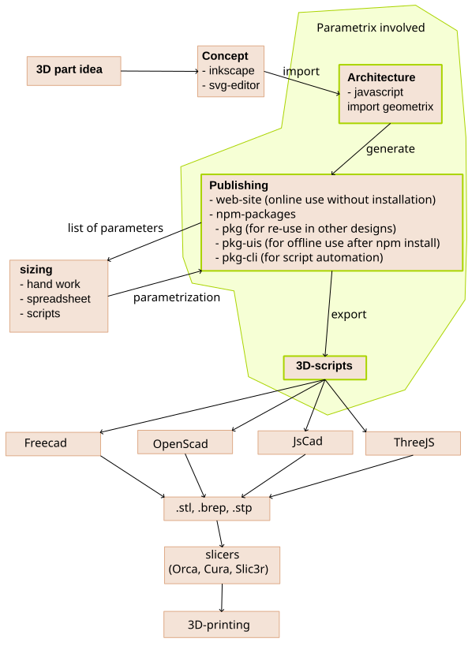

Lists of stuff
In this page, you find a couple of lists related to Parametrix.
List of design-libraries
Below a list of libraries of 3D-part-designs based on Geometrix:
- designix : src - ui - pkg - pkg-cli - pkg-uis : The first and reference design library. Geometrix features were selected to support those designs
- desi51 : src - ui - pkg : pkg-cli - pkg-uis : First batch of geometrix design examples for the tutorial
- desi52 : src - ui - pkg : pkg-cli - pkg-uis : Second batch of geometrix design examples for the tutorial
- desi53 : src - ui - pkg : pkg-cli - pkg-uis : Third batch of geometrix design examples for the tutorial
- desi53b : src - ui - pkg : pkg-cli - pkg-uis : Fourth batch of geometrix design examples for the tutorial
- desi76 : src - ui - pkg : pkg-cli - pkg-uis : The designs of Charlyoleg
- desi77 : src - ui - pkg : pkg-cli - pkg-uis : The designs of Charlyoleg
- desi78 : src - ui - pkg : pkg-cli - pkg-uis : The designs of Charlyoleg
- desi82 : src - ui - pkg : pkg-cli - pkg-uis : The designs of a friend
- desi15L : src - ui - pkg : pkg-cli - pkg-uis : The designs of a junior developer
Glossary:
- designer : Author of a design-libray. He writes javascript using geometrix. Parametrix generates web-pages from that javascript.
- maker : He uses those web-pages, chooses the parameter values, exports the design as 3D-scripts and then 3D-files (.stl, .brep).
- src : The git-repository of the javascript for the design-library. [open-source]
- ui : The web-pages of the design-library. [for makers]
- pkg : The design-library published on npmjs.com. So those designs can be re-used in further designs. [for other designers]
- pkg-cli : The design-library embedded in a command-line-tool. Useful for automation. [for makers (working with scripts)]
- pkg-ui : The design-library embedded in a local web-server. Useful for offline work. [for makers]
If you want to get your geometrix design library in this list, please, create a Github issue with a link to your library.
List of maker-repositories
- ustensile
- gears_and_springs
- cabane
- heliostat_model_50cm
- maker_parame51
- maker_parame76
- maker_parame77
- maker_parame78
- maker_ustensile
List of catalogs of 3D models
- Catalos Github-pages : The dev version of catalog of Parametrix
- Parametrix Official : The Parametrix catalog
- Parametrix Vercel : A second instance of the Parametrix catalog running on Vercel
Todo-list
- Create your own design-library (like param78 or param82)
- Fix CSS for compatibility with all browsers (currently only Ubuntu/Firefox is tested)
- Create a website for finding designer-libraries and maker-repositories
- Develop Vizpax
- Find a good concept for assembling 3D-parts
- Develop an headless ModelView as an alternative to the svelte-component OneDesign
- Extend geometrix for exporting more 3D-scripts
- Enhance UI with better size, colors
- Enhance UX with two windows communicating via localStorage
- Start a new parametric-design-engine for an other area (music, electric circuit, chemistry, optic, ...)
Designers and makers

Parametrix workflow
